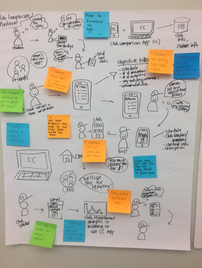
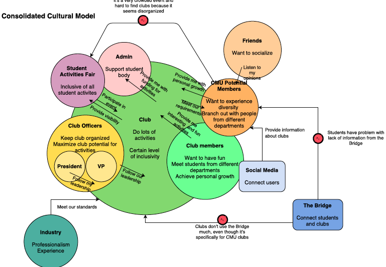
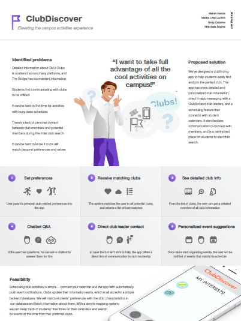

ClubDiscover App
  ClubDiscovery is a tool for incoming freshman and other new students to use when looking for student activity groups to join on campus. This project combined research tools and methodologies: user interviews, affinity diagrams, cultural models, sequence-flow diagrams, visioining, speed dating scenarios, and concept visualization.